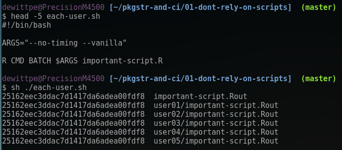
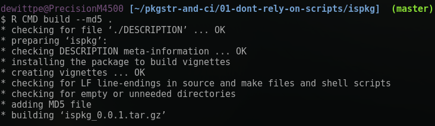
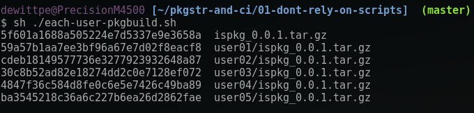

February 2018
Preface
Adopt these tools because …
 Me: The following tools will facilitate high quality reproducible reports…
Me: The following tools will facilitate high quality reproducible reports…
 Audience: … I do just fine. I make reproducible reports. This [expletive] just wants to complicate things…
Audience: … I do just fine. I make reproducible reports. This [expletive] just wants to complicate things…
Okay, fine. How about this?
"Do this, it is good for you." … that is as effective as telling my toddler to each vegetables.
Instead:
Show that sending a generic R script is not going to generate reproducible results.
Revisit some of the less pleasant experiences in my career and show how R packages, version control, and CI would have prevented these events from ever taking place.
"Learn from the mistakes of others.
You can't live long enough to make them all yourself."
– Eleanor Roosevelt
Do not rely on scripts
Consider the following
You've done an data analysis project. Wrote
important-script.R.Your colleague will run the script.
A supervisor, the one who thinks they are a data analyst, will run your script.
You work is part of a federally funded project and is subject to Freedom Of Information Act (FOIA). Joe Public is a skeptic and is looking for any reason to discredit the work.
Excrement flows downhill. Where are you on the company organization chart?
Example
I have copied several of the data sets from the nycflights13 package as .csv
There are five subdirectories to represent five different users.
important-script.R: a simple data load, explore, simple summary and a simple regression model.The
each-user.shbash script will evaluateimportant-script.Rin each user directory.Let's review some files on the next slide.
Example: important-script.R
Example: each-user.sh
Example: Evaluate important-script.R

My version and user01 have the same output.
No other user has the same output!
Maybe the differences are minor?
Let's look at the differences in the outputs.
Expected Output
Diff between Primary and User01
Diff between Primary and User02
Diff between Primary and User03
Diff between Primary and User04
Diff between Primary and User05
Why?!?!
- First, Running the scripts with
--vanillagives the same result

Why?!?!
Why are the outputs different for the five users when
important-script.Ris evaluated?Each user has their own
.Rprofile(see next slide) in the working directory (or home directory)Read
help("Startup")Questions for you:
- Do you know how to run
R --vanilla?- On Linux? OSX? Windows? Command line? GUI? RStudio Desktop? RStudio Server? NppToR? Emacs Speaks Statistics (ESS)? (neo)Vim? Nvim-R?
Can you reasonably expect others to evaluate the script via
R --vanilla?
The .Rprofile files
What if
What if you are user02, user03, user04, or user05 and your supervisor or Joe Public is user01?
What if one of the data files isn't included in the email?
What if someone moves a data file?
What if a Windows dev forgets that other operating systems are case sensitive?
What if someone fat fingers the file and changes something, saves the file, and breaks it?
What if your script requires dplyr 0.7.0 or newer and the end user has version 0.5.0 installed?
- To this point I had a collaborative project work with dplyr 0.4.3 but fail with 0.5.0.
If you are going to use a script
use
packageVersionto check for package versions if needed.Don't modify
options, if you must do so
options()$stringsAsFactors ## [1] TRUE old_opts <- options() # set net options options(stringsAsFactors = FALSE) options()$stringsAsFactors ## [1] FALSE # do work # reset options options(old_opts) options()$stringsAsFactors ## [1] TRUE
If you are going to use a script
- Explicity use namespaces, e.g.,
# good mtcars %>% dplyr::filter(.data$mpg > 30) # bad mtcars %>% filter(mpg > 30)
- From
vignette("programming", package = "dplyr"): dplyr code is ambiguous. Depending on what variables are defined where, filter(df, x == y) could be equivalent to any of:
df[df$x == df$y, ] df[df$x == y, ] df[x == df$y, ] df[x == y, ]
- Do you know what will be in another user's workspace?
The Simplest R Package
"We love the R build process.
It is robust, cross-platform, reliable,
and rather predictable.
It. Just. Works."
– Dirk Eddelbuettel
An R Package for just important-script.R
DESCRIPTION
vignettes/important-script.Rmd
Build and Check

R CMD check
Other Users

The MD5 sums are different because the DESCRIPTION files are different.
Other Users
Time stamp for when the package was built is different from build to build.
The Vignette
Moving from important-script.R to a R Package
At a minimum:
important-script.R→vignettes/important-script.RmdNote needed packages in the Suggests section of the
DESCRIPTIONfile.
Additional:
- helper functions written in the R directory
- tests
- examples
- …
R Package is better because…
The source file (
.tar.gz) is the standard (best) method for sending code and results.All users were able to build the same package with the same command.
The
<pkgname>_<version>.tar.gzis the target reproducible result.When building with
--md5you provide a tool to let others know that they have received the correct file, and/or (re)built the package correctly.Re-evaluating the vignette, after installing the package:
system.fileeliminates (most) issues with end user moving files.In an interactive session, the
.Rprofileor other workspace issues can/will affect the results.
Why version control
Version control shows who made changes and when those changes were made.
Why use version control?
git log
svn log
and
git blame
svn blame
The story
This is a simple, day-to-day working experience. Nothing bad, but a good example for why version control is important.
Colleague 1: Hey, Peter, do you have a minute?
Me: Yeah, what can I help you with?
Colleague 1: I'm looking over the report you wrote (five months ago) and the value reported is 1.67 but when I source your code I get 1.92.
Me: That's not good. Let me see what you're looking at.
The Issue
The value in question was a default value used to reproduce and extend the work of a published paper.
I had structured my work as an R package. Vignettes for the documentation and writing an analysis script.
The report, however, was a standalone document.
- Report: 1.67
source("R/published.R"): 1.92
The project that I was contributing to was housed in a subversion repository.
Check the log
(Names of files, people, and specific details have been modified)
The value in question was defined in the package file R/published.R
dewittpe@PrecisionM4500 [~/work/AGD/analysis/rpkg/] $ svn log R/published.R ------------------------------------------------------------------------ r1255 | ctwo | 2017-09-11 20:37:29 -0600 (Mon, 11 Sep 2017) | 2 lines Colleague 2 edits to code: ------------------------------------------------------------------------ r1241 | pdewitt | 2017-08-23 13:08:06 -0600 (Wed, 23 Aug 2017) | 1 line added source code for R package used for [specific outcome] development. ------------------------------------------------------------------------
Look at the blame
dewittpe@PrecisionM4500 [~/work/AGD/analysis/rpkg/]
$ svn blame R/published.R
1241 pdewitt #' Default Values for [Published Results]
1241 pdewitt #'
1241 pdewitt #' @return A list with the gamma and sigma gamma values.
1241 pdewitt #'
1241 pdewitt #' @seealso \code{vignette("distributions", package = "rpkg")}
1241 pdewitt #'
1241 pdewitt published_defaults <- function() {
1255 ctwo betas <- c(0.0296, 1.92, 0.23, 1.83)
1255 ctwo betacis <- matrix(c(0.0113, 1.30, 0.026, 0.30, 0.0272, 2.61, 3.95, 2.37), ncol = 2)
1241 pdewitt
1241 pdewitt gammas <- betas
1241 pdewitt gammas[c(1, 3)] <- log10(betas[c(1, 3)])
1241 pdewitt gammacis <- betacis
1241 pdewitt gammacis[c(1, 3), ] <- log10(betacis[c(1, 3), ])
1241 pdewitt
1255 ctwo sigmagammas <- (gammas - gammacis[, 1]) / stats::qnorm(0.975) #okay if symmetric
1241 pdewitt
1241 pdewitt list(gammas = gammas, sigma_gammas = sigmagammas)
1241 pdewitt }
Look at the diff
dewittpe@PrecisionM4500 [~/work/AGD/analysis/rpkg/]
$ svn diff -r 1241 R/published.R@1255
Index: R/published.R
===================================================================
--- R/published.R (revision 1241)
+++ R/published.R (working copy)
@@ -8,8 +8,8 @@
published_defaults <- function() {
- betas <- c(0.0169, 1.67, 0.32, 1.83)
- betacis <- matrix(c(0.0108, 1.35, 0.026, 0.30, 0.0264, 2.61, 3.95, 2.37), ncol = 2)
+ betas <- c(0.0296, 1.92, 0.32, 1.83)
+ betacis <- matrix(c(0.0113, 1.30, 0.026, 0.30, 0.0272, 2.61, 3.95, 2.37), ncol = 2)
- sigmagammas <- (gammas - gammacis[, 1]) / stats::qnorm(0.975)
+ sigmagammas <- (gammas - gammacis[, 1]) / stats::qnorm(0.975) #okay if symmetric
list(gammas = gammas, sigma_gammas = sigmagammas)
}
(Step Back to R Packages)
Updated code, but the report document was not updated.
Primary report was not a vignette.
- If it had been, the possibility of the discrepancy between code and report would have been mitigated.
Version Control
Issue: reported value was different from the value someone would get if running the code.
Initial person responsible for resolving issue: Me, author of report and code.
Person responsible for discrepancy: Colleague 2
- This is only known thanks to version control.
What if there was no VC?
Say the code was shared via email, stored on a network drive? Dropbox? Google Docs? (The latter two have some form of VC but subversion or git would be preferable.)
Who would held responsible for resolving the issue?
resource-functions.R
This story provides an example for why we should use R packages and VC and CI.
R packages can improve documentation. R CMD check will verify some basics for documentation, such as function parameters, and that examples evaluate without error.
VC: show who made changes and when those changes were made.
CI: Automatic builds to testing
The Story
Supervisor is primary author and primary analyst for a research project. By decree:
All development will be in R scripts. No packages.
Supervisor has never built an R package.
Standard "I don't have time to learn that" excuse for not using a package.
Collaboration via git.
Manuscript authored via .Rmd.
The Story, continued…
I am tasked with building a resource-functions.R script that will provide tools for performing the data analysis.
This script must provide functions which are generic enough to work with three different data sets, each set with multiple responses and unique sets of explanatory variables. Support cross validation, two different regression methods, implement model selection searches with a dynamic, user specified, model selection criterion.
Each call to the primary function will report multiple summary tables, which need to be customizable, and several model searching results/diagnostics, and the results from the selected models.
The resource-functions.R script must be fully documented, including examples.
The Story, continued…
I know that there is a setup.R script that is called when the analysis/manuscript with the form:
source('Rscripts/load-data.R')
source('Rscripts/clean-data.R')
source('Rscripts/resource-functions.R')
source('Rscripts/analysis.R')
library(rmarkdown)
render("manuscript.Rmd")
Because resource-functions.R is being sourced I know that the examples must be commented out. The functions provide tools for cross validation. Running the examples every time the file is sourced, which occurs dozens of times a day, will require to much computation time and will be unacceptable.
The Story, continued…
I committed and pushed the resource-functions.R script to the project repository.
A few days latter…
A pair of emails
Peter-
resource-functions.R is too dense, and it is impeding my workflow. The comments are not helpful or consistently accurate. … I just tried to run [workhorse function] according to the comment immediately above it, and it won't run. It's ridiculous that extracting alphas is buried that deep. …
Write simpler, longer code. Break things into pieces. Do not nest functions for any project with me. We are not writing software, we are doing research.
If you can't do this, I need to know.
-[Supervisor]
Two hours later:
Peter-
The email earlier this afternoon should not have been sent, I apologize. I was frustrated and broke one of my own rules about electronic communication. We can discuss further in person.
Thanks,
-[Supervisor]
Four Notes:
"If you can't do this, I need to know."
- Translation: Do me a favor and resign so I don't have to fire you.
"We are not writing software, we are doing research."
Software definition from Dictionary.com: "the programs used to direct the operation of a computer, as well as documentation giving instructions on how to use them."
We are writing software. An R script is a set of instructions for the computer to turn data into a report.
"Write simpler, longer code. Break things into pieces. Do not nest functions for any project with me."
- These are contradictory instructions.
Four Notes:
"The comments are not helpful or consistently accurate. … I just tried to run [workhorse function] according to the comment immediately above it, and it won't run."
- The example not running was the impetus for the email. All the other stuff was spill over form the frustration pot boiling over.
There are automated tests for all of these issues built into the
R CMD buildand theR CMD check.This email, and the issues spurring the email, could have been prevent.
What Happened?
git logfound the commit (sha abf342d) for my initial submission of theresource-functions.Rscript.git checkout abf342dand showed that- The examples run.
git checkout masterThe examples fail.
The "not accurate" documentation was partially due some functional arguments missing documentation and default values not matching between documentation and the function call.
What Happened?
git blame[Supervisor] had changed the default value for a function's arguments without updating the documentation.
[Supervisor] An edit to the body of a function resulted in the example failing. No edits to the example had been made.
Other Issues
Running
setup.Rin an interactive session.- My build process was to always run
setup.Rfrom a clean R session.
- My build process was to always run
Several times I would
fetchchanges that would not run.development work pollutes your workspace.
Code might work in your current interactive session but not in a new session.
# What happens when these two lines are evaluated twice in one session? x + 2 x <- 2
Quick Updates
Tense, but constructive, discussion in person.
Extended documentation further.
Built several stand alone scripts for examples.
This still required manual checking of the examples when resource-functions.R was updated.
This particular project did yield three publications, including a top tier journal.
[Supervisor] along with my former department chair tried valiantly to hire me as lead data scientist for a new group they were co-heads of.
R Package, VC, and CI would have helped?
Already showed why VC was important:
Why An R Package:
R CMD buildandR CMD checkto build the package, check that the documentation is consistent (as least in structure) and that the examples run (at least they don't error)Use testthat to build custom tests to run during
R CMD check.
R Package, VC, and CI would have helped?
Why is CI important:
The automated build process would have shown that my initial commit
- built,
- examples would run to completion, and
- passed any specified tests.
Automated tests will catch errors when
the dev fails to run local tests, or,
when local tests pass due to a local setting, but fail in a clean environment.
The CI application can notify the developer that their code fails.
A Simple Example: Build and Check a Package
Start with a package with one function:
bmiThis package will be extended to illustrate solutions to two other professional experiences.
Skeleton for the package via
devtools::create()
The Example Package
Directory Tree
DESCRIPTION
R/bmi.R
The Example Package: document, build, check
- roxygen comments used to generate the man file via
devtools::document() - Build via
R CMD buildordevtools::build() - Check via
R CMD checkordevtools::check()
The Example Package: Edit the bmi function
Assume that this is the only edit made.
R CMD buildwill workResults from
R CMD checkare:
The Example Package: check after bmi edit
- Man files were not updated. (A warning)
- The example fails! (An error)
- If there was CI, then these errors would be reported to the developer.
The Example Package: Update the bmi documentation
- Edits to documentation
devtools::document()R CMD buildR CMD check
Status: OK
The Example Package: Update the bmi documentation
Testing
The Story
This story took place about ten years ago. I am working as a Siebel CRM software developer.
One thing I built was the client vital statistics input page.
- Requirements:
- Client height to be entered in inches
- Client weight to be entered in pounds
- Page will automatically report BMI
- Several months later a tester was given this script:
"Verify that a six foot one inch tall, three hundred pound client has a BMI of 39.6"
- and then….
The Story
I'm sitting in the developer bullpen. Tester comes running down form the testing office and had some choice words for me; delivered loudly and publicly.
Translation: I'm so incompetent that I can write a function to calculate BMI.
bmi <- function(height, weight) {
weight / height ** 2 * 703
}
# Expected input and output
bmi(73, 300)
## [1] 39.57591
# Tester's input and output
# (tester had little experience with non-metric units of measure)
bmi(6.1, 300)
## [1] 5667.831
Issues
The software requirements where met.
Software requirements might not have been sufficient.
- Setting up tests for acceptable height ranges were added
Despite the web page interface labeling the input box with "inches" and "lbs" humans don't always read everything.
The tester was testing TWO things
- When inputting 73 for height and 300 for weigth, does the function return a value of 39.6?
- Is the human inputting the data capable of translating between feet-and-inches to just inches?
- We can automate 1.
We can't account for all PEBKAC errors.
Use testthat
- Use
devtools::use_testthat()to set up the directory structure.
test_bmi.R Check
CI: Automated Builds and Testing
Why use CI
Perhaps not all team members are diligent with respect to running local tests.
CI provides implicit documentation on the system dependencies for a project.
Customizable
github: see travis-ci https://docs.travis-ci.com/
The Story
This is a story that may not match up well with R package development, at least I hope not, but I hope it shows why version control, testing, and CI are critically important.
During my time as a Siebel developer.
Monday morning: Arrive at the client site. Informed that there is a critical feature that must be built and pushed to production before start of business Tuesday.
I'm not the only dev with critical feature development to do.
Supervisor drops by and asks for a "nice-to-have" feature. I tell him "No, not now. I need to take for this critical feature. That's a nice-to-have, I'll look at it Wednesday." Supervisor walks away.
I build the critical feature.
The Story …
There will be no system test. Local test only. System test will be done in production.
I gather my immediate supervisor, the development lead, the project manager, and general manager to witness my local tests and verify the system is working.
I push my changes to production per management ("I was just following orders")
Other devs push their changes.
System goes down The customer management system for the entire nation goes down.
The Story …
Developers and testers work to find the offending code. It was found in the Inventory Business Object – My subsystem.
I'm now tasked with fixing this error.
Problem: the nice-to-have feature my supervisor wanted was in production. It had a critical error that caused the system to fail. I didn't build it. My supervisor built it and pushed to production after okaying the work I had done.
There was no meaningful version control. No way to show who had made the error, nor to revert the system.
- Daily snapshots were available for catastrophic errors.
I fixed the errors and the nice-to-have feature persisted.
The Story …
There was no system test.
There was no CI/build test: such a test could have prevented the change from going into production.
I was held responsible for someone else's error.
This event was cited as the primary reason for not being promoted during my annual review two months later.
Adding CI to Your Project
github.com:
- link your public repo to travis-ci.org (.com for private)
- add a
.travis.yamlfile to the root of your project working directory.
gitlab:
- add a
.gitlab-ci.ymlfile to the root of your repository
- add a
Adding CI to Your Project
github: look at travisci and use
devtools::use_travis()
Adding CI to Your Package:
- gitlab: has docker and several tools set up for pipelines.
Final Notes
Suggestions
Use VC, even it is just you.
- Can be completely local or used in tandem with repository hosts.
- Check EOA for and be careful about where you keep your data.
Control who can contribute changes with or without human interaction:
Git: Limit the number of people who have push access to the master branch. Fork and merge requests for/from others.
SVN: you are the trunk maintainer, have contributions via reintegrating branches or having patches sent from others.
Use CI. Customizable for any project.
These suggestions are for any project. Not just R packages.
Suggestions
Simple analysis, major research project, or even a thesis/dissertation: Build R packages!
Data packages: great way to curate collected and/or generated data.
It is okay to build multiple packages.
It is okay to break one package into multiple packages.
Use makefiles. The build process can be customized. To insure that all developers, regardless of IDE and OS, have the same build process, use (a) makefile(s).
Window users will need Cygwin and/or Rtools installed.
Things are changing
Aim 3 of my PhD dissertation was method dissemination.
Wrote and publish two R packages.
Thought: Too easy, I know how to do this, was going to do it anyways just to support Aims 1 and 2.
Advisor: John Hopkins biostats is requiring all PhD students to write and publish their methods via R packages, or similar archetype.
Side note: a competing method for my Aim 1 was not evaluated.
- Method was published but no software released to support manuscript.
Recieved
method.Rscript from authors- Script failed, system specific file paths, depended scripts that had long been lost. Package version issues that were not documented, …
Things are changing
Observations form UCD
2010-2011 academic year:
I, one other student, and one faculty member used Sweave (knitr initial release was January 2012). All incoming students had either SAS experience or no statistical software experience.
SAS was primary language used in course work.
2016-2017: Majority of the incoming master students (also youngest incoming class) had R experience, and were using knitr
- Some courses require assignments to be authored in .Rmd files, use git, and R.
Are you staying up to date with the next generation of graduate students?
Thanks
Must read resources:
- "R Packages" by Hadley Wickham, http://r-pkgs.had.co.nz/r.html
- "Advanced R" by Hadley Wickham, http://adv-r.had.co.nz/
- Must have tools:
- devtools, testthat
I'm working on a wrapper,
qwraps2::create_pkgwhich usesdevtools::createto build a package skeleton with more of the default files and structure I prefer.- Development version on https://github.com/dewittpe/qwraps2